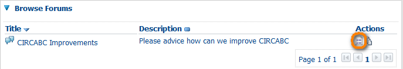
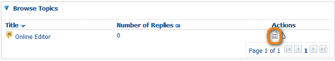

-
What is "Newsgroups"?
'Newsgroups' is the online discussion of your IG where members can hold conversations in the form of posted messages.
-
How to create a new forum and start a new discussion
To start new discussion leaders must first create a new forum
Name the Forum and specify whether it is moderated or not (the description is optional),
Then Create Forum

-
What is a moderated forum?
The discussion can be moderated: a posted message might need to be approved by a moderator before it becomes visible.
-
How to create a new topic
Navigate to the forum where you want to create a new topic
 Leaders must first create a forum, then Authors, Contributors or anyone have 'Access and Post' permission can create a Topic in a Forum
Leaders must first create a forum, then Authors, Contributors or anyone have 'Access and Post' permission can create a Topic in a Forum
Create Topic
Specify the subject and write your post
Click on Post
 You can also upload an attachment or select a link from the library
You can also upload an attachment or select a link from the library
-
How to reply to a topic
Navigate to the topic
Click on the icon reply to this post or Create Post inside this topic
Then answer and click on Post -
How to delete a forum or a post
Click on View detail icon next to the forum or Topic


Click on Delete Forum or Delete Topic,
Or navigate to the topic and click on delete icon
-
How to create a discussion attached to a document
Click on View detail icon next to the document available in the library,
The action Start Discussion is available in the right box,
Specify the subject, write your post and click on Post,
Click on Delete Forum or Delete Topic,
The discussion will be available from actions:

CIRCABC
Help
 Administration
Administration- Library
 Newsgroups
Newsgroups
Questions about the Newsgroups
 Events
Events Information
Information Notification
Notification Search
Search Known bugs
Known bugs